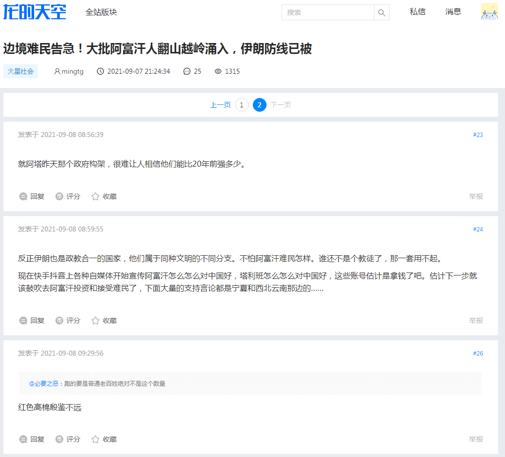
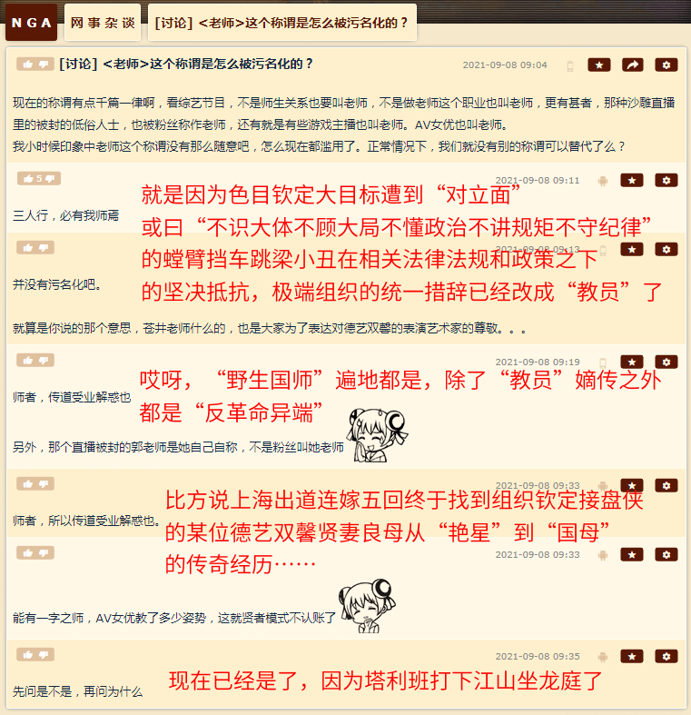
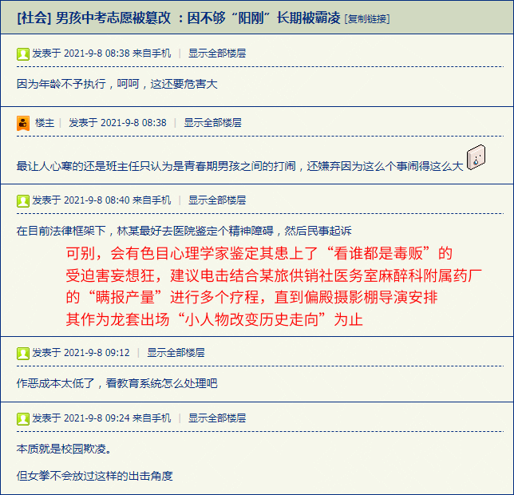

前一篇
目录
后一篇
主页
［
20210908
］“已经到了‘金戈铁马战争剧’档期了，谁还看‘校园欺凌青春剧’吖？！”
人民群众还是对于钦定主角龙傲天搭档“德艺双馨贤妻良母”登上历史舞台指点江山激昂文字的套路喜闻乐见
前情提要：
《摄影棚里所有重大历史事件都会演两次，第一次是伪装成悲剧的闹剧，第二次是彻头彻尾的闹剧》
《新编吉普赛历史剧〈大腕〉》
《吉普赛古典文学四大名著》
《“嗤，早说过了第二次是彻头彻尾的闹剧，还有龙套不信”》
《看来翻拍的划时代大作当中……男主角已经出场了》



2021-09-08 09:57:59